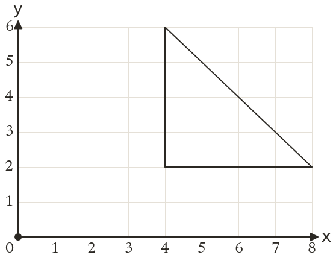
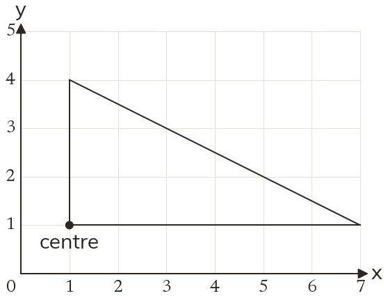
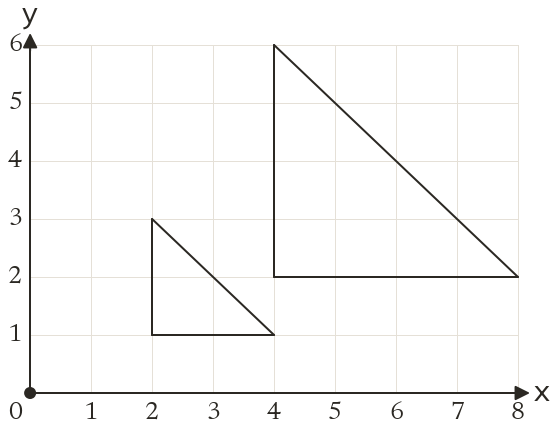
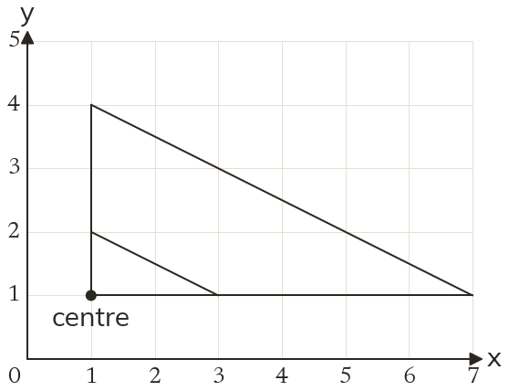

Westonbirt Maths · Transformations
Fractional and Negative Enlargements
Name: ______________________ Date: ____________
1
Enlarge the triangle by scale factor 12, centre (0, 0).
2
Enlarge the triangle by scale factor 13, centre (1, 1).
3
Enlarge the point (9, 6) by scale factor 13, centre (0, 0).
4
Enlarge the point (10, 4) by scale factor 12, centre (2, 2).
5
A side of 12 cm is enlarged by scale factor 14. Find the new length. Is this still called an enlargement?
Ext
Which point does not move in an enlargement by scale factor 12? Explain.



